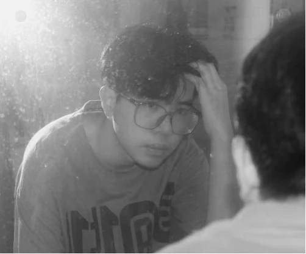

虚幻美术实习生
珠海创羿数字科技有限公司
工作内容：参与游戏项目的宣传海报与主视觉设计，以及场景、模型和特效制作。
完成方式：根据策划需求梳理视觉重点，统一配色、构图与版式；结合反馈迭代设计，配合美术组调整场景与氛围。
交付成果：输出高清宣传设计文件，配合完成场景与特效方案，用于项目阶段性展示与宣发。

视觉传达设计应届毕业生，拥有企业实习、课题项目实战经验。
可独立完成品牌视觉、海报与宣发物料设计，熟练 PS、AI，掌握版式色彩及线上、印刷物料落地规范，输出商用视觉资产。
具备 Maya、UE5 三维辅助能力，衔接平面与引擎美术；善于对接需求迭代方案，兼顾视觉表现与落地性，团队协作良好。
工作内容：参与游戏项目的宣传海报与主视觉设计，以及场景、模型和特效制作。
完成方式：根据策划需求梳理视觉重点，统一配色、构图与版式；结合反馈迭代设计，配合美术组调整场景与氛围。
交付成果：输出高清宣传设计文件，配合完成场景与特效方案，用于项目阶段性展示与宣发。
实训内容：学习 UE5 场景制作与产品展示流程，练习 Maya 建模、拓扑及 UV 拆分。
完成方式：搭建展示场景，逐步调整模型、材质、灯光与镜头，并练习粒子特效与氛围渲染。
交付成果：完成三维展示练习与产品效果图，用于呈现包装、产品及文创设计方案。
工作内容：为校园活动设计海报、招新展板、邀请函，以及活动标志与基础 VI。
完成方式：对接行政部门活动需求，整理宣传信息并统一视觉风格；根据反馈修改设计稿，配合印刷制作与线上发布。
交付成果：累计完成 30+ 件宣传作品，输出线上宣传图与印刷物料设计文件，支持校园活动宣传。
《印·迹》 / 北京理工大学珠海学院毕业展主视觉
作者：钟锡汉、冯健钊、欧廷瑜、万晨煦
《聊斋志异·聂小倩》篇故事角色设计
北京理工大学珠海学院视觉传达设计 / 作者：钟锡汉
《你往哪里走》 / 第 4 届全国大学生反走私创作大赛
广东珠海赛区
《艾饼的时空旅行》 / 第 13 届全国高校数字艺术设计大赛
视觉传达设计本科生组
《珠海日月贝剧院》 / 首届珠海大学生艺术季书画摄影大赛
广东赛区
视觉传达设计本科应届生，专注平面、包装、插画与品牌视觉；同时掌握 UE5 与 Maya 三维美术流程，让二维设计拥有更立体的商业表达。
查看个人介绍